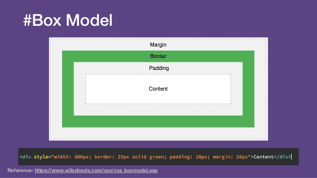

Go back Home
The CSS Box Model
All HTML elements can be considered as boxes.
In CSS, the term "box model" is used when talking about design and layout.
The CSS box model is essentially a box that wraps around every HTML element.
It consists of: margins, borders, padding, and the actual content.
The image below illustrates the box model:
